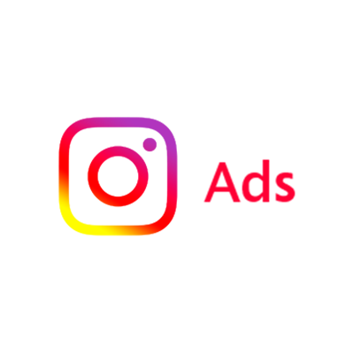

If you're looking to increase website traffic, you might be surprised to know that Instagram is a powerful tool that can help you reach a wider audience. With over one billion active monthly users, Instagram is an excellent platform to drive traffic to your website, especially if you have an eCommerce store or a blog. However, it can be challenging to know where to start and how to make the most of Instagram's features to boost your website traffic. That's why we've put together five tips to help you drive more website traffic from Instagram.
Use CTAs to encourage action
CTAs, or calls-to-action, are an essential part of any marketing strategy, and Instagram is no exception. CTAs can motivate users to take action, such as clicking on a link to learn more about your product, service, or website. Without a CTA, users might not know where to go to find more information or make a purchase. Therefore, it's crucial to use CTAs effectively and consistently in your Instagram posts, stories, and bio.
You can use different CTAs to suit your goals, such as "Shop now," "Learn more," "Sign up," or "Follow us." Make sure your CTAs are clear, concise, and action-oriented. Experiment with different CTAs to see what works best for your audience and track your results. You can also use A/B testing to compare different CTAs and messaging to improve your conversion rates.

Invest in Instagram ads
If you want to take your Instagram marketing to the next level, investing in Instagram ads can help you reach a broader audience and drive more website traffic. Instagram ads give you complete control and flexibility over your campaigns, from the targeting options to the ad format and budget.
Instagram offers different ad formats, such as photo ads, video ads, carousel ads, and story ads, to suit your goals and budget. You can also choose different objectives for your campaigns, such as brand awareness, traffic, conversions, or app installs. Instagram ads allow you to target specific demographics, interests, behaviors, and locations to reach your ideal audience. You can also track your results and adjust your campaigns accordingly.
Offer something unique
One of the best ways to attract and retain visitors is to offer something unique that sets you apart from your competitors. Whether you're selling products, offering services, or providing content, you need to offer something that your audience can't find elsewhere easily. The key is to identify your niche, your USP (unique selling proposition), and your brand personality.
For example, if you're an eCommerce store selling sustainable fashion, you can offer eco-friendly products, ethical production processes, and educational content about sustainability. If you're a blogger writing about health and wellness, you can offer original recipes, personalized coaching, and exclusive e-books. The more value you offer to your audience, the more likely they are to visit your website, follow you on Instagram, and recommend you to others.
Ensure your website is well-designed
Your website is the online hub of your business, and it's where your Instagram followers will go to learn more about you, make a purchase, or contact you. Therefore, it's crucial to have a well-designed and user-friendly website that reflects your brand's values and identity. A poorly designed website can turn visitors away and harm your credibility and reputation.
When designing your website, consider the user experience, the visual design, the content, and the functionality. Make sure your website is mobile-friendly, fast-loading, and easy to navigate. Use high-quality images and videos that showcase your products or services. Write clear and compelling copy that addresses your audience's pain points and offers solutions. Include social proof, such as customer reviews, testimonials, etc.
Collaborate with Influencers
Collaborating with influencers can be a great way to drive traffic to your website from Instagram. Influencers have a significant number of followers who trust and value their opinions. By collaborating with an influencer, you can tap into their audience and increase your brand visibility.
Before you approach an influencer, make sure that their audience aligns with your target demographic. Reach out to them with a specific proposal, detailing what you would like them to do and what they can expect in return. This can be anything from a sponsored post, a product review, or even a discount code for their followers.
When choosing an influencer, look for someone who has a strong engagement rate and a genuine connection with their audience. The influencer's content should align with your brand's values and messaging, and their followers should be active and engaged.
Conclusion
In conclusion, Instagram is a powerful platform that can help drive traffic to your website and increase your online presence. By implementing these five tips - using CTAs, investing in Instagram ads, offering something unique, ensuring your website is well-designed, and collaborating with influencers - you can leverage the platform to achieve your business goals.
Remember to keep your messaging consistent and engaging, and to post regularly to keep your followers interested. With the right strategy and approach, Instagram can be a valuable tool in your digital marketing arsenal.